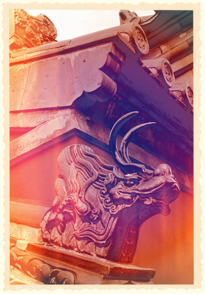

Let's Learn About Retrographer
Welcome
Welcome to Retrographer! Now you can create professional quality vintage photography effects on any image in Adobe Photoshop, Photoshop Lightroom, Photoshop Elements, Aperture, iPhoto and other supported image editing applications. This manual explains how to install your software and provides an overview of the features available in Retrographer.
Introduction
Create stunning and authentic vintage photography effects with Retrographer! Retrographer gives you complete control over every aspect of creating authentic original looking photography of days gone by with its simple and powerful tools!
We based the design of Retrographer on how a real camera, processing lab and finishing studio work!
Camera Tab - When you launch the plug-in, you'll start out in the Camera tab where we've created hundreds of amazing preset cameras and where custom user cameras can be created and saved.
Lens Tab > Adjust Focus - When you click the Lens Tab, by default, you'll start out in our powerful suite of focus tools to create amazing tilt-shift effects, bokeh style focus effects, diffusion blurs and more! Additionally, you can customize the shape and the exact placement of the focus with our simple to use focus editor.
Lens Tab > Color Lens Gel - Want to add some color your image? Add a color gel! Just like the focus control, you have complete control of the colors, the position and the shape of every gel you apply.
Lens Tab > Lens Distortion - No vintage camera would be complete without special lens effects. Create tons of happy accidents with realistic chromatic lens aberrations, image ghosting and the ever classic fisheye!
Flash Tab - Every camera needs an equally nice flash and this one is the king! Control the color of not only the flash but the hotspot within. Choose from several amazing flash styles and adjust the size, flood and direction of your flash for a slick result!
Film Tab - What's a camera without film? Useless! And so we've created the tools to create an unlimited range of film stocks and looks complete with realistic film grain you can tweak to your heart's content!
Lab Tab - Just like a real photo lab, we want you to have full control of all aspects of your image from the exposure to the color adjustment and the entire range of push processing effects to create a full range of unique and vintage styles! Also check out our super saturate for a stunning neon look!
Effects Tab - Here you can explore the range of fun special effects that make vintage photographs sparkle! From authentic vignettes with full control to dynamic camera light leaks to the tactile look of authentic halftone printing, it's all here!
Finish Tab - Once you have the perfect image, put it on your favorite surface, age it with our amazing weathering and aging tools or frame it up with an awesome array of framing styles including film stock, wet transfer, classic snapshot, slides and decorative frames.
There's really a lot to explore and most features allow you multiply each effect when you're ready to really wow 'em so dig in and enjoy!
Retrographer
Take any design, photograph, type treatment, or image and transport to another time and aesthetic with our powerful and easy-to-use plug-in GUI interface. We spent thousands of hours developing this one of a kind plug-in sure to bring your work to the next level.
This manual will give you all the tools you need to understand how Retrographer works, so let's get started! If you don't know where to start, we'll give you a hint, click on the Viewfinder at top of the GUI or keep reading!